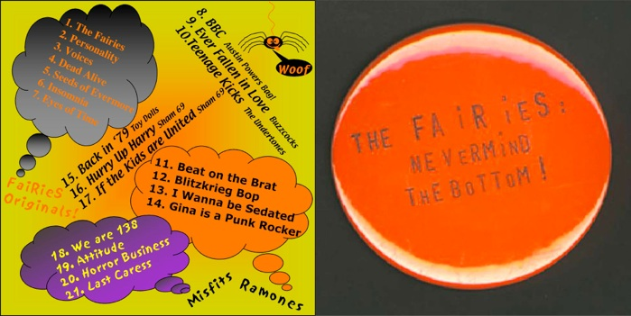
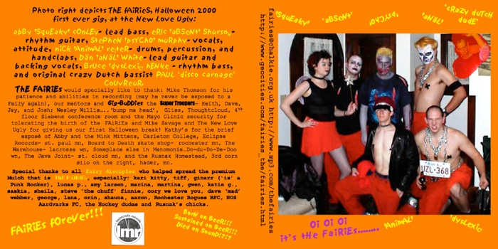

Yes, you lucky lucky people, here you can download the entire recorded work of the FAiRiEs. Happy listening. Health Warning! Some material is non parentable. It will scare your granny.
FAiRiEs Music Page

The FAiRiEs -
Nevermind the Bottom
CD, spring 2001.
Thanks to Mike Thompson / Lastminute Records for production and recording
Cut out and keep CD sleeve artwork below!(sadly not scratch and sniff, but then, you can’t have everything can you...)
The FAiRiEs
Demos
Recorded on an ancient stereo tape deck with perpendicular microphones in a barn outside Rochester, DD house basement and other glamourous locations, 2000 ish
08 BBC.mp3 (Ming Tea)
09 Ever Fallen in Love.mp3 (Buzzcocks)
10 Teenage Kicks.mp3 (Undertones)
11 Beat on the Brat.mp3 (Ramones)
12 Blitzkreig Bop.mp3 (Ramones)
13 Sedated.mp3 (Ramones)
14 Gina is a Punk Rocker.mp3 (Ramones)
15 1979.mp3 (Toy Dolls)
16 Hurry Up Harry.mp3 (Sham 69)
17 If the Kids are United.mp3 (Sham 69)
18 138.mp3 (Misfits)
19 Attitude.mp3 (Misfits)
20 Horror Business.mp3 (Misfits)
21 Last Caress.mp3 (Misfits)
The FAiRiEs
Dodgy Demos
(sorry broken links, due to lost files, real player needed) recorded in late 1999 on a boombox in a Mayo Clinic seminar room, with original bassist Paul "Hooligan" Couvrer, with kitchen utensils and trash cans as the drum kit.

